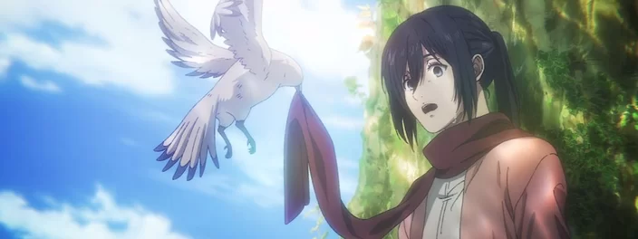
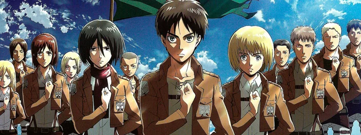
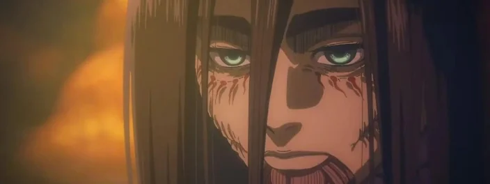
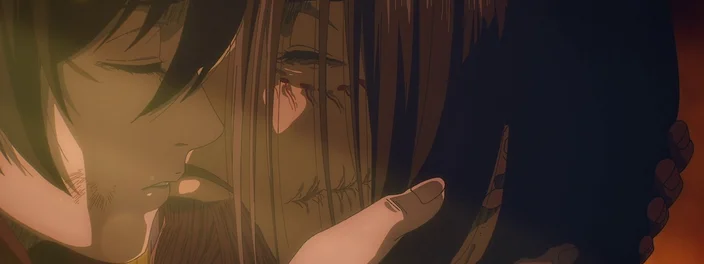

Attack on Titan se passa em um mundo onde a humanidade vive dentro de cidades cercadas por enormes Muralhas que os protegem dos Titãs, criaturas humanóides gigantes que devoram humanos aparentemente sem motivo. A história gira em torno de Eren Jaeger, sua irmã adotiva Mikasa Ackerman e seu amigo de infância Armin Arlert, cujas vidas mudam para sempre após o aparecimento de um Titã Colossal, que provoca a destruição de sua cidade natal e a morte da mãe de Eren. Jurando vingança e recuperar o mundo dos Titãs, Eren, Mikasa e Armin se juntam a Divisão de Reconhecimento, um grupo de elite de soldados que lutam contra Titãs fora das Muralhas.
Abertura da primeira Temporada:
Informações Gerais
Attack on Titan é uma série de anime baseada no mangá de mesmo nome de Hajime Isayama. Foi produzido pelo Wit Studio e Production I.G nas três primeiras temporadas e pela MAPPA na quarta. A primeira temporada foi lançada em 7 de abril de 2013, sendo exibida no Japão pela emissora MBS e nos outros países pelos serviços de streaming Crunchyoll e Funimation.
Attack on Titan ganhará sequência? Tudo sobre o futuro do anime
Após mais de 10 anos acompanhando Eren, Mikasa, Armin e outros personagens cativantes de Attack on Titan (Shingeki no Kyojin no original), o anime chegou ao seu episódio final no dia 4 de novembro deste ano. A boa notícia é que a produção deixou um gostinho de continuação!
Saiba MaisCriador de Attack on Titan explica porque o anime não teve final feliz
O anime Attack on Titan chegou ao fim após 10 anos de história, deixando os fãs um pouco intrigados com o que aconteceu em seus últimos momentos. A série não teve um final feliz, ao contrário do que se espera de um encerramento de qualquer produção, mas seu criador se pronunciou com uma justificativa bastante válida.
Saiba MaisAttack on Titan: entenda tudo sobre o episódio final do anime
Depois de muita espera, o episódio final de Attack on Titan (Shingeki no Kyojin, no original) foi exibido na televisão japonesa. No Brasil, a produção está disponível no streaming Crunchyroll, que também transmitiu os instantes finais do anime com legendas em português brasileiro
Saiba MaisFinal de Attack on Titan: veja diferenças do anime e do mangá
Após uma jornada de dez anos, o anime Attack on Titan chegou ao seu final, deixando um legado que cativou e dividiu seu público. O último episódio, com duração de 85 minutos, trouxe à vida os capítulos finais da épica série de mangá de Hajime Isayama.
Saiba Mais